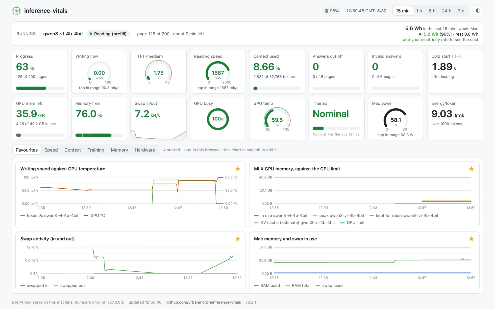
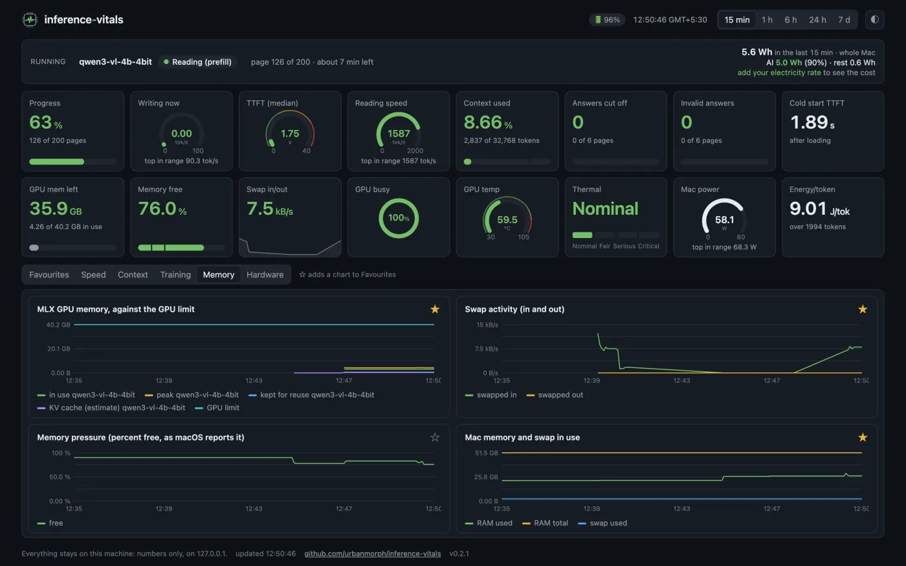
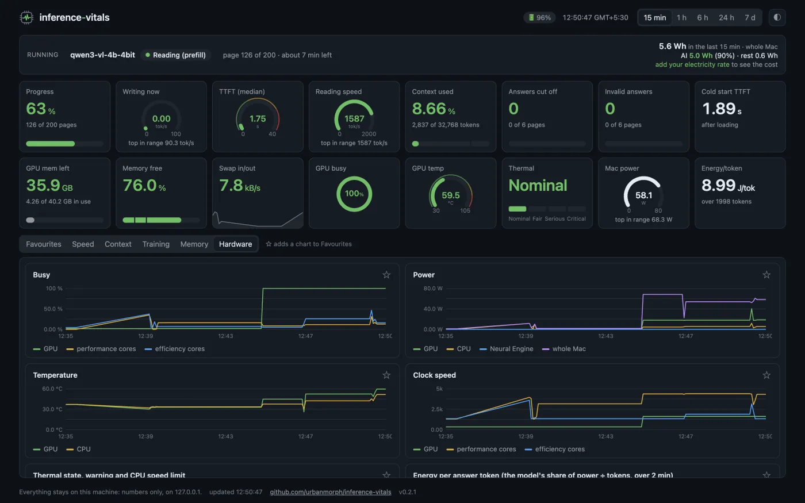
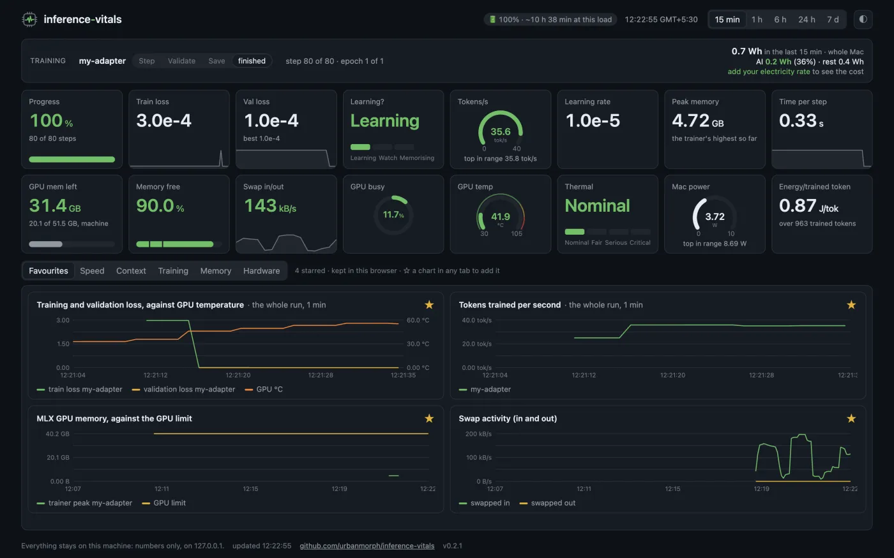

See why your local model slowed down
A free dashboard for running and fine-tuning AI models on an Apple Silicon Mac. It sits beside whatever you run and puts the model and the machine on one timeline: tokens per second and loss beside memory, swap, GPU heat and power.
brew install uv prometheus macmon
uv tool install inference-vitals
inference-vitals start
open http://127.0.0.1:3000
What it records
Both sides of a run, the model and the machine, read every few seconds and kept so you can look back over any range.
Model runs
- Speed live while the answer is written
- Time to first token, median and 95th percentile
- Context used against the window
- Answers cut off or invalid
Fine-tunes
- Training and validation loss
- Steps and time left, tokens trained per second
- Still learning, or memorising its examples
- Peak memory against the GPU limit
The machine
- GPU memory left, memory pressure, swap
- GPU use, temperatures, thermal state
- Power and energy, and the AI's share of it
- Battery: will it outlast the run?



Connect what you run
The machine's numbers appear as soon as it starts. For the model's, put one line in front of what you already use.
| You run | Then | More |
|---|---|---|
| An engine with an HTTP API: Ollama, LM Studio, llama.cpp, the MLX servers, Jan, LocalAI | inference-vitals proxy --to http://127.0.0.1:11434 and point your app at http://127.0.0.1:8401 | The proxy |
| Your own Python code | Three calls from inference_vitals.metrics | The library |
| A fine-tune: mlx-vlm, mlx-lm, or any training loop | inference-vitals train -- <your training command> | Training |
It stays on your machine
Every service listens on 127.0.0.1, the page loads nothing from the internet, and only numbers are collected. Prompts, answers and file names never reach it.
It is Prometheus with a dashboard page of its own (or Grafana, with its reporting and sharing turned off), macmon for the chip on a Mac, small exporters for memory and the battery, the proxy, and a tiny Python library with no dependencies beyond Python itself.
The services take a few hundred MB of memory between them and very little CPU. More in privacy, overhead and limits.
Questions
Does it work with Ollama, LM Studio and llama.cpp?
Yes. Run inference-vitals proxy in front of any engine with an HTTP API (Ollama, LM Studio, llama.cpp, the MLX servers, Jan, LocalAI) and point your app at the proxy. It measures each request on its way through: speed while the answer is written, time to first token, context used, answers cut off or invalid. Your own Python code can report the same numbers with three calls.
Can it follow an MLX fine-tune?
Yes. Wrap the training command (inference-vitals train -- your command), follow its log file, or report from your own loop. It shows training and validation loss, steps and time left, tokens trained per second, peak memory against the GPU limit, and whether the model is still learning or has started memorising its examples.
Does anything leave my machine?
No. Every service listens on 127.0.0.1, the page loads nothing from the internet, and only numbers are collected: prompts, answers and file names never reach it. Configuration, history and logs stay in ~/.local/state/inference-vitals.
Does it slow the model down?
Very little. The services take a few hundred MB of memory between them and very little CPU, and an open page does nothing while its tab is hidden. For a run where speed matters, close the tab: Prometheus keeps recording, and you can look at the whole run afterwards.
Which machines does it run on?
Apple Silicon Macs (it reads the chip through macmon, which needs Apple Silicon, so not Intel Macs), and Linux with NVIDIA GPUs as an experimental option. AMD and Intel GPUs and Windows are not supported.
How is it different from Activity Monitor or nvtop?
Activity Monitor and nvtop show the machine and know nothing about models; benchmark apps time only the requests they send themselves. inference-vitals records both sides of whatever you run, the model and the machine, on the same timeline, so you can see why a run slowed down: the GPU got hot, the system started swapping, or a page was simply longer.